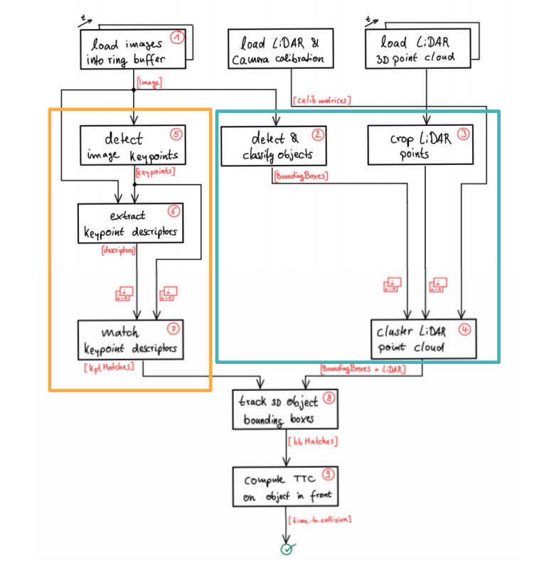
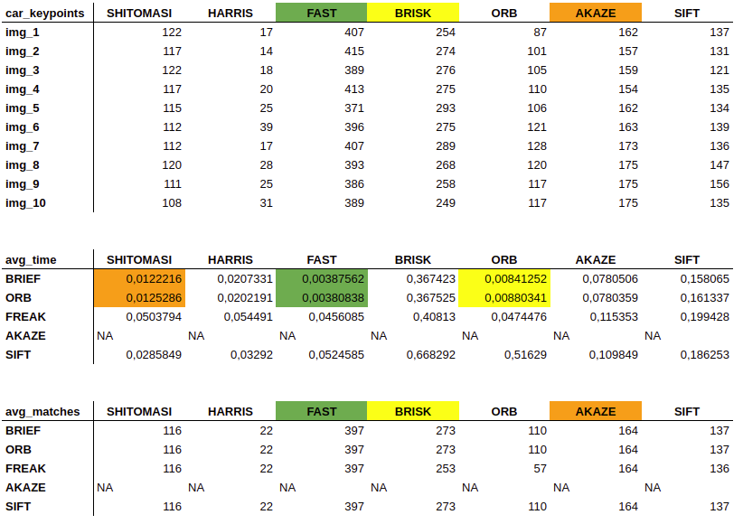

Tracking 3D objects with Lidar and Camera
Integrating Lidar Point Clouds with Camera Images to compute Time To Collision (TTC)
Autonomous veihcles technology has been in my radar (no pun intended) for a while now. I was excited to apply AI to some very complex problems and this project was for sure one of the most amazing I ever did. More than Machine and Deep Learning techniques, solving autonomous driving requires several technlogies and methods. All this is only possible through fusing sensors to make sense of the enviroment.
To fusion two sensors was a completly new challenge for me and seeing the results is awesome. After some introduction on how camera technology works and how optics are applied in modern systems, some image processing and computer vision applications was covered, to better understand how to fusion Lidar and Camera data. From this point on, I tried to apply this knowledge to a collision avoidance project for vehicles.
TL;DR

Project Structure. Source: Udacity Sensor Fusion NanodegreeFrom cameras we detect images keypoints, such tail lights, extract these keypoints descriptors and match them between successive images and obsereve its distances, computing Camera TCC. From Lidar we take a 3D Point Cloud, crop the points(discart road and bad measurements) and cluster these into objects, identified using Neural Networks and provided with bounding boxes. We than fusion both information, connecting them into space and tracking 3D object bouding boxes to compute the Lidar TCC on the object in front of the car. Conducting various tests with the framework, we tried to identify the most suitable detector/descriptor combination for TTC estimation and also to search for problems that can lead to faulty measurements by the camera or Lidar sensor.
The Technology
To make it happen, everything was coded in C++ using the KITTI dataset. Besides, the whole code can be found in my github. This project is part of the Udacity Sensor Fusion Nanodegree.
Our recording platform is a Volkswagen Passat B6, which has been modified with actuators for the pedals (acceleration and brake) and the steering wheel. The data is recorded using an eight core i7 computer equipped with a RAID system, running Ubuntu Linux and a real-time database. We use the following sensors:
- 1 Inertial Navigation System (GPS/IMU): OXTS RT 3003
- 1 Laserscanner: Velodyne HDL-64E
- 2 Grayscale cameras, 1.4 Megapixels: Point Grey Flea 2 (FL2-14S3M-C)
- 2 Color cameras, 1.4 Megapixels: Point Grey Flea 2 (FL2-14S3C-C)
- 4 Varifocal lenses, 4-8 mm: Edmund Optics NT59-917

The Project
Cameras are one mature technology and the main sensor in autonomous vehicles. In a world made by humans, everything is adapted to our senses and driving would not be different. Therefore, it's main advantage is to "simulate" the human vision being able to interpreate 2D information as road signs and lanes. At the same time, it has challenges as we humans: bad performance in darkness or bad wether conditions. Thus, alone in some applications the camera will fail, hence the need to add a second sensor such as Radar or Lidar. To fill the gap, Lidar has high resolution and can reconstruct 3D objects while Radar has a greater range and can detect velocity more accurate.
In this project the main objetive was to estimate the Time to Collision(TCC) using a camera-based object classification to cluster Lidar points and from 3D bounding boxes compute TCC. Human reflection time is around 1 second, so the system has to warn us way before and starting breaking 2 to 3 seconds before collision. But how do we tell a machine a collision is near? How do we compute such time? The first concern is to chose a Motion Model: Constant Velocity(CVM) or Constant Acceleration(CAM). While CAM models best real world situations, CVM assumes that the velocity does not change and it was chosen for simplicty, leaving space for us to focus more on the computer vision aspects.
From that, the problem can be divided into two main parts: estimate TTC from Lidar points and estimate it using camera successive images. The former is pretty straightforward, addressing only the preceding car and calculating the time from the X component in the Point Cloud. Based in the CVM, we can compute the velocity based in two Lidar measurments over time, taking the closest Lidar point in the path of the car and observing how it changes in a time window. To avoid errouneos measurments that would lead to false TCC, we perform a IQR range values to remove outliers. Due some measurement accuracy based on the amount of light reflected from an object, when using Lidar for TCC is advised to remove measurement of the road surface and low reflectivity points, making it easy to measure the distance of the preceding vehicle. Furthermore, instead of estimating the velocity after computing the veihcles velocity and two distance measurements, that could be noisy, we could use a Radar sensor that measures directly the relative speed.

In other hand, it is hard to measure metric distances using only one camera, some companies achieve measuring distance using a stereo camera setup, like Mercedes-Benz which pioneered in this technology. With two pictures of the same place, taken from two different points of view, is possible to locate points of interest in both images and calculate its distance using geometry and perspective projection. Using a mono camera we can estimate TCC only by observing relative height change (or scale change) in the preceding car, for example, without distance measurement. Here enters Deep Learning, allowing us to identify cars in images. As showed in the figure above, it is also used CV techniques to find keypoints and track them using descriptors from one frame to the next, estimating the scale change in the object. Tracking how these descriptors change over time, we can estimate TTC.
First, we focus on loading images, setting up data structures and putting everything into a ring buffer to optimize memory load. Then, integrated several keypoint detectors such as HARRIS, FAST, BRISK and SIFT and compare them with regard to number of keypoints and speed. For the descriptor extraction and matching, we used brute force and also the FLANN approach and tested the various algorithms in different combinations and compare them with regard to some performance measures. Counting the number of keypoints on the preceding vehicle for 10 images and taking note of the distribution of their neighborhood size, doing this for several detectors implemented, we noted that FAST, BRISK and AKASE were the detectors that identified the larger number of keypoints.

Comparision table between several detectors to identify keypointsDuring the matching step, the Brute Force approach is used with the descriptor distance ratio set to 0.8 and the time it takes for keypoint detection and descriptor extraction was logged. A helper function was created to iterate through all the possible detectors and descriptors, saving its matches and times. From this was identified that the best Detector for this application is FAST, and the best Descriptors are BRIEF and ORB.
Then we detected and classify images using the YOLO framework, which gives us a set of bounding boxes and augmenting them associating each bounding box to its respective Lidar points. Finnaly we track this bounding boxes over time to estimate Time To Collision with Lidar and Camera measurements. When taking into account both TCC, twenty pairs of Detector/Descriptors were analyzed and AZAKE/FREAK was chosen based on the average error when compared to Lidar's TCC.
To check the complete code with comments, tasks and the results, please check the Github repository.
Subscribe to Edge AI Guru
Get the latest posts delivered right to your inbox